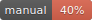

Getting started
Getting started
Configuring AWS
Prerequisites
To work with Myrmex and its main plugins, you should to have some notions about:
- AWS IAM
- AWS Lambda
- Amazon API Gateway
- OpenAPI (aka Swagger) specification
- Node.js
Myrmex aims to experiment quickly, but to really be efficient, it is necessary to know the AWS services that works with Myrmex.
Permissions needed to deploy the project in AWS
Myrmex plugins that manage AWS resources need to have permissions to execute commands that communicate with the AWS API. When a command needs these permissions, Myrmex will use the AWS credentials provided by the environment.
To begin to work with Myrmex, the following policies can be used:
IAMFullAccessAWSLambdaFullAccessAmazonAPIGatewayAdministrator
Installation
Prerequisites: node (version 4 minimum) and npm (version 4 recommended) must be installed.
Installing the Myrmex command line
The myrmex command line has its own npm module. Install it globally.
npm install -g myrmex
We can check that the myrmex command line is correctly installed.
# This command will show the available options and sub-commands
myrmex -h
At this point, there is only one sub-command available: myrmex new. When creating a project, other subcommands will be
provided by Myrmex plugins.
Creating a new project
myrmex new is the command that creates new projects. If it is called without argument and/or option, it will provide a prompt
to define the configuration of the project.
# Using the command without option and argument,
# the user will be prompted to give information about the project configuration
myrmex new
The prompt will ask to choose a project name and to select the plugins to install among @myrmex/iam, @myrmex/lambda and
@myrmex/api-gateway. The plugin selection depend on the project. It is easy to install a plugin later if it is not done at
this step (see next section).
myrmex new will perform 3 operations:
- create a project folder
- install the latest version of Myrmex and the project's plugins
- create a
myrmex.jsonconfiguration file
Once the project is created we can enter its folder. Using myrmex -h we can see that new myrmex sub-commands are available.
They are provided by plugins that have been installed in the project.
Installing plugins
myrmex new propose a selection of plugins to install but it is possible to install them or other plugins separately. Myrmex
plugins are npm packages. So the following command will install the plugin @myrmex/api-gateway:
npm install @myrmex/api-gateway --save-dev
To be loaded by Myrmex, the plugin needs to be referenced in the myrmex.json file, in the plugins section:
{
"name": "my-serverless-application",
"plugins": [
"@myrmex/api-gateway"
]
}
It is possible to disable a plugin by removing it from the myrmex.json file.
Project configuration
Myrmex can be configured in different ways.
The myrmex.json file
In the root directory of a Myrmex project, there is a myrmex.json file that contains the configuration of the project.
A myrmex.json file looks like this:
{
"name": "my-serverless-application",
"plugins": [
"@myrmex/iam",
"@myrmex/api-gateway",
"@myrmex/lambda"
],
"config": {
"myConfigKey": "my-config-value",
"myNestedConfig": {
"level1": 42,
"level2": {
"key1": true,
"key2": false
}
}
}
}
name: the identifier of the project.plugins: the list of plugins that Myrmex has to register. A Myrmex plugin can be a node module installed via npm or defined in the project. A plugin installed via npm but specified here will not be registered by Myrmex.config: the configuration of the project. Each plugin can use the it and inject default values in it.
The command myrmex show-config allows to see the current configuration of a project. This is the response of this command for
the previous myrmex.json file.
"myConfigKey": "my-config-value",
"myNestedConfig": {
"level1": 42,
"level2": {
"key1": true,
"key2": false
}
},
"iam": {
"policiesPath": "iam/policies",
"rolesPath": "iam/roles"
},
"apiGateway": {
"apisPath": "api-gateway/apis",
"endpointsPath": "api-gateway/endpoints",
"modelsPath": "api-gateway/models"
},
"lambda": {
"lambdasPath": "lambda/lambdas",
"modulesPath": "lambda/modules"
}
}
This example shows that the three plugins injected the configuration to define the location of the content that
they manage. It is possible to override this configuration in the myrmex.json file.
Splitting the configuration into various files
If a project has a many configuration keys, it is possible to split the configuration object into various files in a folder
named config.
For the previous example, to define the same configuration that in the previous example, the directory structure will look like this:
project-root
├── myrmex.json
└── config
└── myNestedConfig.json
The myrmex.json file:
{
"name": "planet-express",
"plugins": [
"@myrmex/iam",
"@myrmex/api-gateway",
"@myrmex/lambda"
],
"config": {
"myConfigKey": "my-config-value"
}
}
The file config/myNestedConfig.json:
{
"level1": 42,
"level2": {
"key1": true,
"key2": false
}
}
The command myrmex show-config will give the same response:
"myConfigKey": "my-config-value",
"myNestedConfig": {
"level1": 42,
"level2": {
"key1": true,
"key2": false
}
},
"iam": {
"policiesPath": "iam/policies",
"rolesPath": "iam/roles"
},
"apiGateway": {
"apisPath": "api-gateway/apis",
"endpointsPath": "api-gateway/endpoints",
"modelsPath": "api-gateway/models"
},
"lambda": {
"lambdasPath": "lambda/lambdas",
"modulesPath": "lambda/modules"
}
}
Using environment variables to override the configuration
It is also possible to define configuration via environment variables. Any environment variable that starts with MYRMEX_
is injected as a configuration key/value. An underscore is used to resolve nested keys.
Because
_is used to resolve nested key, this technique cannot work with configuration keys containing a_.
For example, the configuration of myNestedConfig.level1 can be overrided using the environment variable
MYRMEX_myNestedConfig_level1:
export MYRMEX_myNestedConfig_level1=43
myrmex show-config
Result:
{
"myConfigKey": "my-config-value",
"myNestedConfig": {
"level1": "43",
"level2": {
"key1": true,
"key2": false
}
},
"iam": {
"policiesPath": "iam/policies",
"rolesPath": "iam/roles"
},
"apiGateway": {
"apisPath": "api-gateway/apis",
"endpointsPath": "api-gateway/endpoints",
"modelsPath": "api-gateway/models"
},
"lambda": {
"lambdasPath": "lambda/lambdas",
"modulesPath": "lambda/modules"
}
}
Configuration values defined via an environment variable are always of type
String
Defining the configuration programmatically
All json configuration files in Myrmex are loaded using the Node.js require() function. This means that they all can be
replaced by a javascript file that exposes the desired configuration.
For example, the previous myrmex.json file can be replaced by this myrmex.js file:
module.exports = {
name: 'planet-express',
plugins: [
'@myrmex/iam',
'@myrmex/api-gateway',
'@myrmex/lambda'
],
config: {
myConfigKey: process.env.MY_ENVIRONMENT_VARIABLE || 'my-default-value'
}
}
IAM plugin
IAM plugin
The IAM plugin allows to define and deploy AWS policies and roles. It can be used to avoid referencing IAM roles ARNs and simplify the configuration of other plugins.
Prerequisites
To use the @myrmex/iam plugin, it is necessary to have a minimal knowledge about AWS Identity and Access Management.
An AWS user or role that uses the plugin @myrmex/iam must have access to IAM administration. The AWS policy IAMFullAccess
gives all necessary permissions.
Installation
Install the npm module in a Myrmex project:
npm install @myrmex/iam --save-dev
Then enable the plugin in the myrmex.json file:
{
"name": "my-app",
"plugins": [
"@myrmex/iam"
]
}
Commands
create-policy
Usage:
create-policy [identifier]
Create a new IAM policy in iam/policies/<identifier>.json. The command does not configure the policy but just prepare the
file in the right place. By default it is iam/policies/<identifier>.json.
create-role
Usage:
create-role [options] [identifier]
Options:
-m, --model <model-identifier> select a model to quickly create the role configuration
-p, --policies <policy-identifiers> select the policies to attach to the role
Create a new IAM role. By default the location of roles is iam/roles/<identifier>.json.
Two predefined role configuration are available:
APIGatewayLambdaInvocation: TheAWSLambdaRolepolicy is attached to it and it can be associated to API Gateway endpoints.LambdaBasicExecutionRole: TheAWSLambdaBasicExecutionRoleis attached to it and it can be associated to Lambda functions.
It is possible to define custom policies and trust-relationship configuration. Is is also possible to reference
policies from the Myrmex project.
Roles can be referenced by other plugins to facilitate the deployment of Myrmex applications: by defining roles in the Myrmex project, deploying some resources like Lambda functions or API definitions can be done on various environments without needing to define specific configuration to reference different roles ARN.
deploy-policies
Usage:
deploy-policies [options] [policy-identifiers]
Options:
-e, --environment [environment] An environment identifier that will be used as a prefix
-s, --stage [stage] A stage identifier that will be used as a suffix
Deploy one or more policies in AWS. The --environment option is used as a prefix and the --stage option as a suffix.
deploy-roles
Usage:
deploy-roles [options] [role-identifiers]
Options:
-e, --environment [environment] An environment identifier that will be used as a prefix
-s, --stage [stage] A stage identifier that will be used as a suffix
Deploy one or more roles in AWS. The environment option is used as a prefix and the stage option as a suffix.
Definition of IAM policies
The policies managed by Myrmex are nothing more than IAM policy definitions stored as JSON file. This allows to manage the permissions needed by an application alongside the code.
Every time Myrmex has to deploy a policy, it checks if it needs to be created or updated and perform the appropriate action if needed. If a policy already has 5 version (the maximum allowed by AWS), the oldest one will be deleted (unless it as been defined as the default one).
Definition of IAM roles
AWS roles can be configured with JSON files with @myrmex/iam. The structure looks like this:
{
"description": "Description of the role",
"managed-policies": [
<policy-identifier>
],
"inline-policies": [
<policy-definition>
],
"trust-relationship": {
"Version": "2012-10-17",
"Statement": [{
"Effect": "Allow",
"Principal": {
"Service": "<service-identifier>"
},
"Action": "sts:AssumeRole"
}]
}
}
The managed-policies section contains a list of identifiers of IAM policies already deployed in AWS associated to the role. During the deployment of a role, Myrmex will look for policies matching the identifiers in managed-policies, trying combinations with the environment and the stage options:
<environment>_<identifier>_<stage><environment>_<identifier><identifier>
The inline-policies section contains a list of AIM policy definitions associated to the role.
The trust-relationship section contains the policy that describe the trusted entities that can assume the role
Hooks and extensions
Hooks
beforePoliciesLoad()
beforePolicyLoad(definitionFilePath, name)
afterPolicyLoad(policy)
afterPoliciesLoad(policies)
beforeRolesLoad()
beforeRoleLoad(definitionFilePath, name)
afterRoleLoad(role)
afterRolesLoad(roles)
beforeDeployPolicy(policy)
beforeDeployRole(role)
Extensions
myrmex.call('iam:getRoles') returns the roles managed in the current Myrmex project.
myrmex.call('iam:getAWSRole') returns the roles available in AWS.
myrmex.call('iam:retrieveRoleArn', identifier, context) retrieve the ARN of an IAM role using its identifier. Tries
combinations with the environment and the stage properties of the context parameter in this order:
<environment>_<identifier>_<stage><environment>_<identifier><identifier>.
Lambda plugin
Lambda plugin
The Lambda plugin allows to define and deploy Lambdas. It should work with any runtime but has been tested mostly with Node.js and secondly with Python.
Prerequisites
To use the @myrmex/lambda plugin, it is necessary to have a minimal knowledge about
AWS Lambda.
An AWS user or role that uses the plugin @myrmex/lambda must have access to Lambda administration. The AWS policy
AWSLambdaFullAccess gives all necessary permissions.
Installation
Install the npm module in a Myrmex project:
npm install @myrmex/lambda
Then enable the plugin in the myrmex.json file:
{
"name": "my-app",
"plugins": [
"@myrmex/lambda"
]
}
Once the plugin is installed and enabled in the project, the myrmex command line will provide new sub-commands to manage and
deploy Lambdas.
Project anatomy
By default, the content managed by the Lambda plugin is located in an lambda directory in the root directory of the
project.
Out of the box, for the Node.js runtime, the Lambda plugin allows to separate the definition of Lambdas from the logic of the
application by providing a specific place to write node modules but it is not mandatory to use it. @myrmex/lambda helps to
define and deploy Lambdas but the developer is responsible of the implementation of the application. Other plugins built on
top of the Lambda plugin may be more opinionated.
The directory lambda/lambdas contains the Lambdas definitions. For each of its sub-directory is considered as a
Lambda definition. It must contains a config.json file and the code of the Lambda. The name of the subdirectory is used
as the Lambda identifier.
The config.json file allows to define the runtime, the timeout, the memory, the role and other properties of the Lambda.
The content of the params property is used as the argument of the following methods from the AWS SDK:
By default, for the Node.js runtime, the directory lambda/modules contains the node modules of the project. For example,
some of these modules could be named log, or data-access or authorization etc...
Each module should have a clear responsibility so that each Lambda can embed only the code it needs. This is a recommendation but the developer is free to organize the code as he want. The Lambda plugin does not force you to use a specific project organization.
This is what a project structure could look like:
lambda
├── lambdas The Lambdas defined by the application
| ├── my-nodejs-lambda The name of this directory is the identifier of a Lambda
| | ├── config.json The configuration of the Lambda (runtime, memory, timeout, execution role...)
| | ├── index.js A node module that exposes the handler
| | └── package.json It is possible to install the dependencies of the Lambda here
| └── my-python-lambda Several runtimes can coexist in a project
| ├── config.json
| └── lambda_function.py
└── modules The node modules of the application - they can be added as a dependency of a Lambda in its
| package.json file
├── authorization The name of this directory is the identifier of a module
| ├── package.json Package file of the module
| ├── index.js Main file of the module
| └── test If you wish, you can write the code to test the module in this directory
├── data-access
| ├── package.json
| └── index.js
└── log
├── package.json
└── index.js
Example of config.json file:
{
"params": {
"Timeout": 30,
"MemorySize": 256,
"Role": "arn:aws:iam::123456789012:role/MyRole",
"Runtime": "nodejs6.10",
"Handler": "index.handler"
}
}
The package.json of a module or a Lambda can declare dependencies with other modules using file paths in the dependencies
property:
{
"name": "data-access",
"version": "0.0.0",
"dependencies": {
"log": "../log"
}
}
In this case, require('log') will load the module log installed in lambda/modules/data-access/node_modules/log.
It is recommended to use relative paths for portability.
It is recommended to use a recent version of npm to minimize the size of the Lambda packages and facilitate the
configuration of nested dependencies. Indeed, npm@2 can behave in an unexpected manner with nested dependencies when using
relative file paths.
Commands
create-lambda
create-lambda [options] [identifier]
Options:
-r, --runtime <nodejs|nodejs4.3|nodejs6.10|python2.7|python3.6> select the runtime
-t, --timeout <timeout> select the timeout (in seconds)
-m, --memory <memory> select the memory (in MB)
-d --dependencies <modules-names> select the project modules that must be included in the Lambda (only for nodejs runtimes)
--role <role> select the execution role (enter the ARN)
Create a new Lambda. By default the location of Lambdas is lambda/lambdas/<identifier>/.
create-node-module
For the Node.js runtime only.
create-node-module [options] [name]
Options:
-d, --dependencies <dependent-modules> select the node modules that are dependencies of this new one
Prepare a new Node.js module. By default the location of modules is lambda/modules/<name>/.
The creation of nodes modules is just a suggestion to organize the code of a project. The idea is to maintain each component of the application in its own node module to select only relevant components when deploying Lambdas.
Every Lambda can declare its modules dependencies using local paths
in its package.json file. Every module can also declare dependencies to other modules that way.
When Myrmex deploys a Lambda, it executes npm install and the dependencies are installed in the node_modules folder.
deploy-lambdas
deploy-lambdas [options] [lambda-identifiers...]
Options:
--all deploy all lambdas of the project
-r, --region [region] select the AWS region
-e, --environment [environment] select the environment
-a, --alias [alias] select the alias to apply
Deploy one or more Lambdas in AWS. The --environment option is used as a prefix. The --alias option will publish a version
in Amazon Lambda and apply an alias. Setting the option to an empty string (--alias "") will skip this.
install-lambdas-locally
install-lambdas-locally [lambda-identifiers...]
Deletes the node_modules folder of one or several lambda and runs npm install to re-install it.
test-lambda-locally
test-lambda-locally [options] [lambda-identifier]
Options:
-e, --event <event-name> Event example to use
Executes a Lambda locally. The event option allows to select the example object that will be passed as the first argument.
Example objects are defined in json files in lambda/lambdas/<identifier>/events/<event-name>.json. A mock of the context
object is passed as the second argument.
test-lambda
test-lambda [options] [lambda-identifier]
Options:
--event <event-name> Event example to use
-r, --region [region] select the AWS region
-e, --environment [environment] select the environment
-a, --alias [alias] select the alias to test
Executes a Lambda deployed in AWS. The event option allows to select the example object that will be passed as the first
argument. Example objects are defined in json files in lambda/lambdas/<identifier>/events/<event-name>.json. A mock of the
context object is passed as the second argument.
Setting the option --alias to an empty string (--alias "") will invoke the LATEST version of the Lambda.
API Gateway Plugin
API Gateway Plugin
Prerequisites
To use the @myrmex/api-gateway plugin, it is necessary to have a minimal knowledge about Amazon API
Gateway and the Swagger v2.0 specification.
@myrmex/api-gateway uses the API Gateway Import API feature.
Installation
Install the npm module in a Myrmex project:
npm install @myrmex/api-gateway
Then enable the plugin in the myrmex.json file:
{
"name": "my-app",
"plugins": [
"@myrmex/api-gateway"
]
}
Once the plugin is installed and enabled, the myrmex command line will provide new sub-commands to manage and deploy APIs.
Project anatomy
By default, the content managed by @myrmex/api-gateway is located in an api-gateway directory in the root directory of the
project.
A project configuration is composed of a list of APIs and a list of endpoints. Each endpoint specification contains the list
of APIs where it must be exposed. Therefore, an endpoint GET /my-resource/{id} can be exposed by a mobile-app API and a
back-office API, while another endpoint PUT /my-resource can be exposed by the back-office API only. This allows to
create different APIs for different purposes while sharing some functionalities.
The directory api-gateway/apis contains the API definitions. Each of its sub-directory has the name of an API identifier and
contains a Swagger specification file (without the endpoints definitions).
The directory api-gateway/endpoints contains the endpoints definitions. The structure of its sub-directories represents url
paths and HTTP methods. Each HTTP method directory contains the definition of an endpoint. An endpoint definition is composed
of its Swagger specification in a spec.json file.
As an example is more easy to understand, that is what a project structure could looks like:
api-gateway
├── apis The APIs defined by the application
| ├── back-office The name of this directory is the identifier of an API
| | └── spec.json The API's Swagger specification (without endpoints definitions)
| └── mobile-app
| └── spec.json
└── endpoints The endpoints defined by the application
├── resource-a Creates the path /resource-a
| ├── {id} Creates the path /resource-a/{id}
| | ├── GET Creates the HTTP method GET for the path /resource-a/{id}
| | | └── spec.json The Swagger specification of the endpoint GET /resource-a/{id}
| | └── PATCH
| | └── spec.json
| └── PUT
| └── spec.json
└── resource-b
├── GET
| └── spec.json
└── resource-c
└── GET
└── spec.json
This project contains 2 APIs:
back-officemobile-app
5 endpoints are available:
GET /resource-a/{id}PATCH /resource-a/{id}PUT /resource-aGET /resource-bGET /resource-b/resource-c
To associate an endpoint to one or more APIs, it is possible to enrich the endpoint specification (spec.json file) with a
list of API identifiers, in a Myrmex extension to Swagger.
{
"x-myrmex": {
"apis": [
"back-office",
"mobile-app"
]
}
... rest of the endpoint specification
}
@myrmex/api-gateway uses the API Gateway Import API feature. Therefore, the configuration of AWS-specific authorization
and API Gateway-specific API integrations is done with the API Gateway extensions to
Swagger.
Commands
create-api
create-api [options] [api-identifier]
Options:
-t, --title <title> The title of the API
-d, --desc <description> A description of the API
Create a new API. By default the location of API definitions is api-gateway/apis/<api-dentifier>/. The API definition is a
file named spec.json that contains a Swagger object. The command line
will to create a simple base configuration. It is possible to write a full Swagger definition here, but the plugin
@myrmex/api-gateway is designed to separate API definitions into pieces and generate full definitions when needed.
create-model
create-model [name]
Create a new model. By default the location of models is api-gateway/model/model.json. Models can be referenced as input
or output of API endpoints but are not mandatory.
create-endpoint
create-endpoint [options] [resource-path] [http-method]
Options:
-a, --apis <api-identifiers> The identifiers of APIs that expose the endpoint separated by ","
-s, --summary <endpoint summary> A short summary of what the operation does
--auth <authentication-type> The type of authentication used to call the endpoint (aws_iam|none)
-i --integration <integration-type> The type of integration (lambda|http|mock|aws-service)
-r, --role <role> select the role to invoke integration
Create a new endpoint. By default the location of endpoints definitions is
api-gateway/endpoints/<resource-path>/<http-method>/. The endpoint definition is a file named spec.json that contains a
Swagger path item object. The command line will help to create a
simple base configuration. Then, the developer can complete the definition using the Swagger specification and the API
Gateway extentions to Swagger.
The definition of an endpoint can be added to one or more APIs using a Myrmex extention to Swagger:
{
"x-myrmex": {
"apis": [
"<api-identifier-a>",
"<api-identifier-b>"
]
}
... rest of the endpoint specification
}
inspect-api
inspect-api [options] [api-identifier]
Options:
-c, --colors highlight output
-s, --spec-version <version> select the type of specification to retrieve: doc|aws|complete
Generate the Swagger definition of an API and print it. There are three different versions of the specification:
- The
docversion only contains parts of the definitions that belong to the Swagger specification. - The
awsversion is the definition that is sent to AWS API gateway when performing a deployment. - The
completeversion contains everything that is defined in the project, including the Myrmex extensions to Swagger.
inspect-endpoint
inspect-endpoint [options] [resource-path] [http-method]
Options:
-c, --colors highlight output
-s, --spec-version <version> select the type of specification to retrieve: doc|aws|complete
Generate the Swagger definition of an endpoint and print it. There are three different versions of the specification:
- The
docversion only contains parts of the definitions that belong to the Swagger specification. - The
awsversion is the definition that is sent to AWS API gateway when performing a deployment. - The
completeversion contains everything that is defined in the project, including the Myrmex extensions to Swagger.
deploy-apis
deploy-apis [options] [api-identifiers...]
Options:
-r, --region [region] select the AWS region
-e, --environment [environment] select the environment
-s, --stage [stage] select the API stage
Deploy one or more APIs in API Gateway. The --environment option is used as a prefix to the API name in API Gateway. It can
be useful to deploy APIs several time in the same AWS account. Values for --environment could be PROD or DEV or JOHN
to be able to deploy the API for production, development or a developer environment.
The use of
--environmentcan seem redundant with--stage, but when deploying an API Gateway stage, it is not to possible to access to the testing tools of the AWS console. These tools are available only for the ultimate version of the API. Using--environmentcan allow several developers to use the testing tools of the AWS console simultaneously.--environmentalso allows to use--stagefor other purposes like API versioning (with values likev1,v2,2017-01-01...).
Creating plugins
Creating plugins
Plugin definition
The Myrmex core is the node module @myrmex/core. It exports an object (referred as the Myrmex instance) that is based on
Pebo that is a kind of event emitter.
Myrmex plugins use the Myrmex instance to interact with each other. A Myrmex plugin can be published on npm to be used by anyone, or it can be a project specific plugin.
Myrmex plugins can make use of the following functionalities:
- Listen for events fired by other plugins
- Fire events that can be listened by other plugins
- Attach functions to the Myrmex instance (refered as extensions)
Anatomy of a plugin
A plugin is node module that exports an object that has to respect a specific structure to be used by the Myrmex instance.
Here is a quick overview of an object exported by a Myrmex plugin.
{
// An unique identifier that should be carefully chosen to not enter in conflict with other plugins
name: `my-plugin-identifier`,
version: `0.0.0`,
// If the plugin is configurable, this place is suggested to define default values
// This configuration can be overwritten for a project in the file
// `project-root/config/my-plugin-identifier.json`
config: { // These values will be accessible using
key1: 'defaultValue1', // `myrmex.getConfig("my-plugin-identifier.key1")`
key2: { // `myrmex.getConfig("my-plugin-identifier.key2")`
a: 'defaultValue2A', // `myrmex.getConfig("my-plugin-identifier.key2.a")`
b: 'defaultValue2B' // `myrmex.getConfig("my-plugin-identifier.key2.b")`
}
},
hooks: {
// These functions are event listeners that will be called
// when events "eventNameA" and "eventNameB" are fired by Myrmex
// More details about events below
eventNameA: function (argA, argB) {
return Promise.resolve()
},
eventNameB: function () {
return Promise.resolve()
}
],
extensions: {
// These functions will be registered in the Myrmex instance
// so they will be accessible by other plugins
// More details about extensions below
extensionNameA: function() {}
extensionNameB: function() {}
}
}
The Myrmex instance
Before describing events and extensions, we should have a quick overview about the initialization of the Myrmex instance and the registration of plugins.
Initialization by the Myrmex command line
When the Myrmex command line is called. It checks if it is called from a Myrmex project by searching for a package.json file
containing a dependency to @myrmex/core in the current path.
Once a @myrmex/core module have been found, the Myrmex command line loads it and receives an object: the Myrmex instance.
The Myrmex command line then loads the project configuration (including the list of plugins) and applies it to the Myrmex instance. Each plugin is loaded and registered in the Myrmex instance.
Registration of plugins
When the Myrmex instance registers a plugin, it basically performs three operations:
- Checks if it there is a list of hooks and create the event listeners.
- Checks if it there are extensions and add them to the Myrmex instance.
- Create a reference of itself in a
myrmexproperty that is added to the plugin.
So, once a plugin has been registered by the Myrmex instance, it has a new myrmex property that contains the Myrmex
instance. It can be used to fire events or call extensions that have been provided by other plugins.
Events mecanism
The event mecanism of Myrmex is designed to allow code injection and works with asynchronous operations.
From the event emitter point of view, when the Myrmex instance fires an event, it returns a promise of an array containing the arguments of the event. These arguments have eventually been transformed by event listeners.
From the event listener point of view, when the listener function is called, it has the possibility to alter the parameters of the event. If the event listener has to perform asynchronous operations to alter theses parameters, it should return a Promise that resolves once the modification is done.
Therefore, an emitter can wait for all listeners to eventually alter the event parameters to continue its task.
Here is a dummy example:
// The Myrmex instance is accessible via the `myrmex` property of a plugin once it has been registered
const myrmex = require('./plugin-index.js').myrmex;
// Create an event listener
myrmex.when('MyEvent', (myArg1, myArg2) => {
myArg.propB += ' transformed by an event listener';
myArg.propC = 'property added by an event listener';
return Promise.resolve();
});
// We define two objects that will be passed as the event arguments
// Passing literals is not recommended because JavaScript will copy them when passing them as arguments
// Myrmex would not be able to retrieve modifications applied to them
const eventArg1 = {
propA: 'original property',
propB: 'original property'
}
const eventArg2 = {
propA: 'original property'
}
myrmex.fire('MyEvent', eventArg1, eventArg2)
.then(arg => {
console.log(arg[0]);
// {
// propA: 'original property',
// propB: 'original property transformed by an event listener',
// propC: 'property added by an event listener'
// }
console.log(arg[1]);
// {
// propA: 'original property'
// }
});
Using this mecanism, Myrmex plugins can create their own events and listen for other plugins events. Several plugins can listen for the same event and use and/or modify its arguments.
For example, before configuring the integration request of API endpoints, the
@myrmex/api-gatewayplugin fires and event that allows other plugins to be notified about it. Theses plugins have the opportunity to inject data in the event's argument so the plugin@myrmex/api-gatewaycan generate a compete API specification.
Note that it is not recommended to call myrmex.when() directly when writing a plugin. We prefer to use the hooks property
of the object exported by the plugin to organize the code and be sure that the listeners are attached to the events during
the registration of the plugin.
Extensions
@todo